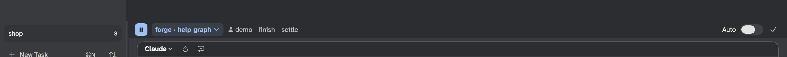
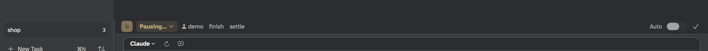
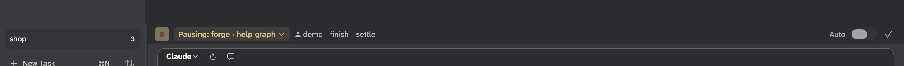
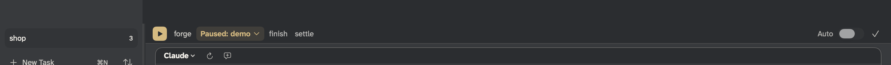
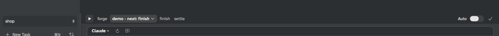
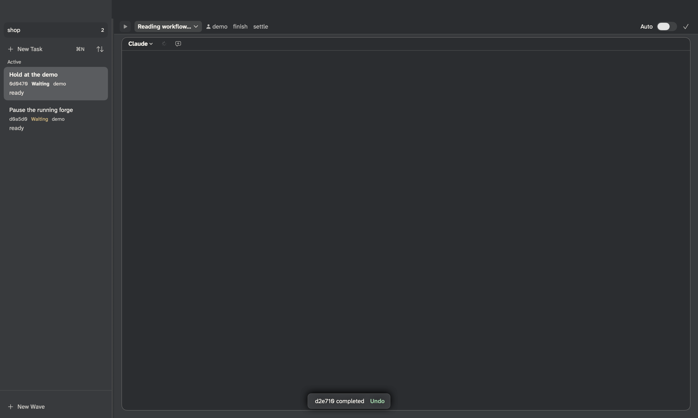
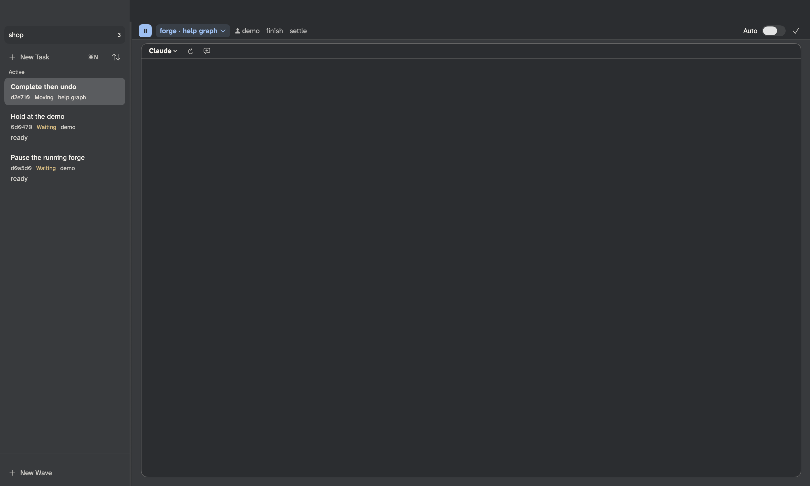
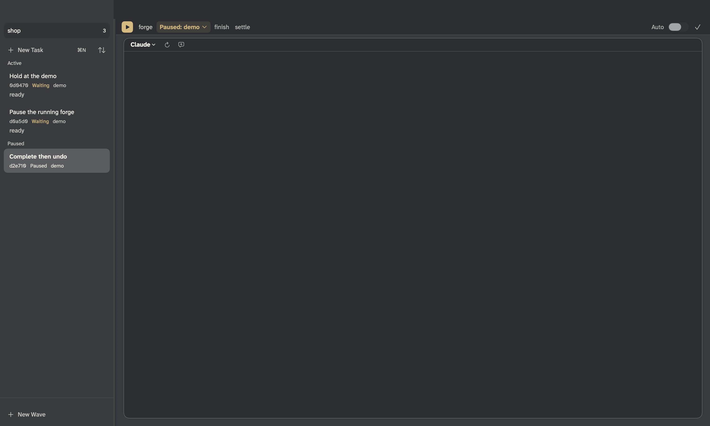

The previous walkthrough (f057895fb9) found four gaps. 2d9b3ca205 fixed them and a3e62d706f made Pausing its own WorkflowAction. This run checks both in the real window.
Branch lf and an isolated Dev bundle (com.loopflow.mac.qac2.dev, .lf/qa/QAHook.swift compiled in, then removed from the tree) were built at a3e62d706f. They ran against a private Machine (LF_HOME=/tmp/lfqc2/lfhome) and a disposable repository shop with a bare origin. Graph track is - graph: forge, - interactive: demo, - graph: finish, - graph: settle, and each sub-Graph is one cmd: help graph. An LF_BIN wrapper holds that command until a go file appears and logs each run. Three Tasks ran through the real server, at 1500×900 pt.
| Scenario | What happened |
|---|---|
| Running Task | Blue ⏸, chip forge · help graph, then 👤 demo · finish · settle, Auto, ✓. |
⏸ on a held cmd: step(fix: amber Pausing, step-prefixed chip) | On the click the button turned to a disabled amber pause.fill with Pausing…, then Rust's Pausing: forge · help graph. Last run showed a dimmed ▶ and Pausing: help graph. Status: “Pausing at forge (help graph is finishing).” A click on the amber button while it drained sent no request (no task.unpause in the server log).  |
| Drained step exits 0 (fix: single-run drained cmd:) | The cursor moved past forge: filled amber ▶, forge [Paused: demo ⌄] finish settle, and the row was under Paused in lf task list. |
| ▶ at that pause | Smart unpause at a human step parked the Task: demo · next: finish with an open ▶, and the row read Waiting. The wrapper's log shows forge ran once, and no worker started. The primary conversation stayed open the whole time. lf task unpause d2e710 --run on a second Task answered “Task d2e710 waits at demo” and ran nothing. |
| ✓ then Undo (fix: Undo reselects) | ✓ moved the window to the next Task and posted d2e710 completed Undo. Undo, about a second later, sent task.reopen 1.5 s after task.complete. The window went back to d2e710 (lf desktop state: selected task_d2e710…), with the Graph still running forge · help graph.  |
| Paused group | Pausing d2e710 from the bar put it under a Paused heading below Active, labelled “Paused · demo”, with the bar reading Paused: demo. |
lf task status called a drained step that exited 0 stopped: “latest Graph: help graph is stopped while the Task is paused”, and after unpause, “help graph was stopped. `lf task run` continues from it”. That step had finished and would not run again. stopped_execution (ops/task_execution.rs) now separates a finished step from an interrupted one:
Both sentences were read live from the rebuilt binary on the same private Machine. task_graph_launch_tests::pause_during_land_finishes_the_merge_and_stops_before_the_next_step now asserts the paused sentence after a drained pr land --local, and it passed on macOS.
In .lf/qa/task-pause.md, notes now cover using drag for the bar's buttons, Undo's position, and how to read the window's selection through an env -i wrapper.
NSMenu, so only the headless Mac tests cover this.TaskFeed.complete. This run used no Simulator, so the earlier Simulator tests are the only coverage.lf task status prints the same sentence.--run then runs nothing (“waits at demo”). The wording promises a run that never comes. The sentence could name the human step instead, as “Waiting for you at demo” does after unpause.action: line still print “Step e801e283-… is running help graph”, a raw step UUID.